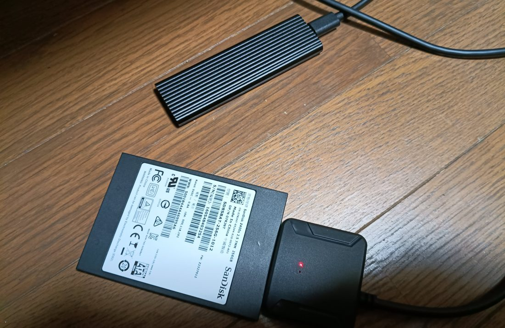
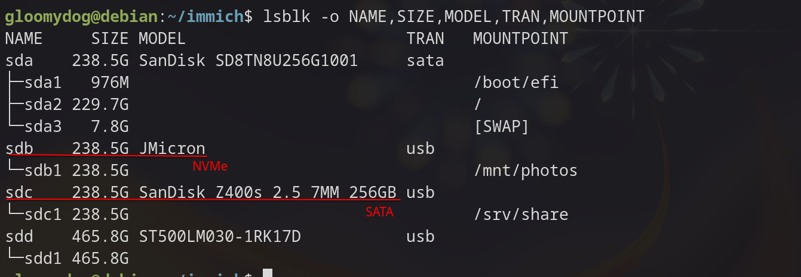
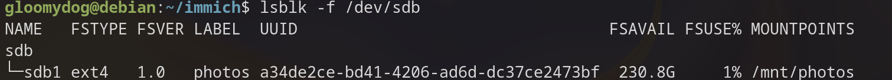
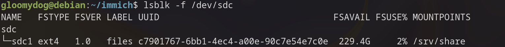

Formatting Old SSDs for My NAS
I found two old SSDs in a drawer: an NVMe drive and a SATA drive. I want to reuse them in my new NAS, so first I have to wipe all the old data and format them. This post records exactly what I did, including the SMART health checks I ran beforehand and the mistakes I made along the way, so the next time I can follow it step by step.

Warning: formatting destroys all data on the target and cannot be undone. Every command below that contains /dev/sdX is destructive. Replace X with the real letter only after you have confirmed the target with lsblk.
The drives
| Label | Model | Type | Capacity | Connection | Planned role |
|---|---|---|---|---|---|
| SSD-A | SanDisk Z400s 2.5 7MM 256GB | SATA | 238.5G | External (USB–SATA adapter) | File share, mounted at /srv/share |
| SSD-B | SK hynix BC511 256GB | NVMe | 238.5G | External (USB enclosure) | Photos, mounted at /mnt/photos |
The capacity is shown by lsblk in GiB, which is why a "256 GB" drive appears as 238.5G.
Common procedure
1. Identify the target
lsblk -o NAME,SIZE,MODEL,TRAN,MOUNTPOINT
sdb (model "JMicron", the USB bridge chip) and the SATA drive as sdc. The red marks are my own annotations.Things to check in this output:
sdais the NAS boot disk (/boot/efi,/, swap). Never touch it.- The
TRANcolumn shows how each drive is connected. The two target drives areusb; the boot disk issata. - Because the NVMe drive sits behind a USB bridge, it appears as a
sdXdevice and its model is reported as the bridge chip ("JMicron"), not the drive itself. - Device letters are assigned in the order the drives are detected, so they can change between boots and between machines. On my laptop both drives appeared as
/dev/sdaon different days. Re-runlsblkbefore every destructive command instead of reusing a letter from memory.
Check SMART health (optional but worthwhile)
Since these drives are going into a NAS, I checked their health first. Through a USB bridge, smartctl usually cannot talk to the drive unless you tell it which bridge protocol to use with -d.
For the SATA drive (-d sat):
sudo smartctl -a -d sat /dev/sdcFor the NVMe drive behind a JMicron bridge (-d sntjmicron):
sudo smartctl -a -d sntjmicron /dev/sdbKey values from the two reports:
| Item | SSD-A (SATA) | SSD-B (NVMe) |
|---|---|---|
| Overall health | PASSED (attribute check only) | PASSED |
| Power-on hours | 498 | 578 |
| Power cycles | 5,815 | 3,030 |
| Temperature | 36 °C | 32 °C |
| Wear | Wear_Leveling_Count 632 (no percentage reported) | 2% used, 100% spare available |
| Data written | Total_LBAs_Written raw value 27006 (unit not documented) | 17.5 TB |
| Reallocated sectors | 4 | n/a |
| Media / integrity errors | Reported_Uncorrect: 0 | 0 |
| Other items to watch | UDMA_CRC_Error_Count: 59 | Unsafe shutdowns: 127 |
How I read this:
- Both drives are lightly used and pass their overall health assessment, so they are fine for a home NAS.
- The SATA drive has 4 reallocated sectors. That is a small, stable number, but it is worth checking again after a few weeks to make sure it does not grow.
- The 59 CRC errors on the SATA drive are normally caused by the cable or connector, not by the flash itself. If the number keeps increasing, replace the adapter or cable first.
- The SATA report also contains "Incomplete response" and aborted
READ LOG EXTentries. These look like limits of the USB bridge, which does not pass every ATA command through, rather than drive faults, but I did not verify this by connecting the drive directly. - The 127 unsafe shutdowns on the NVMe drive are just a count of past power losses or unplugs without a clean shutdown. Media errors are 0.
Full smartctl output: SSD-A (SATA)
smartctl 7.4 2023-08-01 r5530 [x86_64-linux-6.12.118+deb13-amd64] (local build)
Copyright (C) 2002-23, Bruce Allen, Christian Franke, www.smartmontools.org
=== START OF INFORMATION SECTION ===
Device Model: SanDisk Z400s 2.5 7MM 256GB
Serial Number: 160548403254
Firmware Version: Z2327012
User Capacity: 256,060,514,304 bytes [256 GB]
Sector Sizes: 512 bytes logical, 4096 bytes physical
Rotation Rate: Solid State Device
Form Factor: 2.5 inches
TRIM Command: Available, deterministic, zeroed
ATA Version is: ACS-2 T13/2015-D revision 3
SATA Version is: SATA 3.2, 6.0 Gb/s (current: 6.0 Gb/s)
SMART support is: Available - device has SMART capability.
SMART support is: Enabled
=== START OF READ SMART DATA SECTION ===
SMART Status not supported: Incomplete response, ATA output registers missing
SMART overall-health self-assessment test result: PASSED
Warning: This result is based on an Attribute check.
SMART Attributes Data Structure revision number: 1
Vendor Specific SMART Attributes with Thresholds:
ID# ATTRIBUTE_NAME FLAG VALUE WORST THRESH TYPE UPDATED WHEN_FAILED RAW_VALUE
5 Reallocated_Sector_Ct 0x0032 100 100 000 Old_age Always - 4
9 Power_On_Hours 0x0032 242 100 000 Old_age Always - 498
12 Power_Cycle_Count 0x0032 100 100 000 Old_age Always - 5815
177 Wear_Leveling_Count 0x0032 100 100 000 Old_age Always - 632
179 Used_Rsvd_Blk_Cnt_Tot 0x0032 100 100 000 Old_age Always - 4
187 Reported_Uncorrect 0x0032 100 100 000 Old_age Always - 0
194 Temperature_Celsius 0x0022 064 044 000 Old_age Always - 36 (Min/Max 0/56)
195 Hardware_ECC_Recovered 0x0032 100 100 000 Old_age Always - 0
199 UDMA_CRC_Error_Count 0x0030 100 100 000 Old_age Offline - 59
241 Total_LBAs_Written 0x0030 253 253 000 Old_age Offline - 27006
242 Total_LBAs_Read 0x0030 253 253 000 Old_age Offline - 49517
SMART Error Log Version: 1
Warning: ATA error count 0 inconsistent with error log pointer 4
ATA Error Count: 0
SMART Self-test log structure revision number 1
Num Test_Description Status Remaining LifeTime(hours) LBA_of_first_error
# 1 Short offline Completed without error 00% 229 -
# 5 Short offline Completed without error 00% 149 -
Selective Self-tests/Logging not supported
The above only provides legacy SMART information - try 'smartctl -x' for moreFull smartctl output: SSD-B (NVMe)
smartctl 7.4 2023-08-01 r5530 [x86_64-linux-6.12.118+deb13-amd64] (local build)
Copyright (C) 2002-23, Bruce Allen, Christian Franke, www.smartmontools.org
=== START OF INFORMATION SECTION ===
Model Number: BC511 NVMe SK hynix 256GB
Serial Number: SD95N599711205O5U
Firmware Version: 11004101
NVMe Version: 1.3
Namespace 1 Size/Capacity: 256,060,514,304 [256 GB]
Optional Admin Commands (0x0017): Security Format Frmw_DL Self_Test
=== START OF SMART DATA SECTION ===
SMART overall-health self-assessment test result: PASSED
SMART/Health Information (NVMe Log 0x02)
Critical Warning: 0x00
Temperature: 32 Celsius
Available Spare: 100%
Available Spare Threshold: 50%
Percentage Used: 2%
Data Units Read: 44,365,084 [22.7 TB]
Data Units Written: 34,289,058 [17.5 TB]
Power Cycles: 3,030
Power On Hours: 578
Unsafe Shutdowns: 127
Media and Data Integrity Errors: 0
Error Information Log Entries: 0
Self-test Log (NVMe Log 0x06)
Self-test status: No self-test in progress
Num Test_Description Status Power_on_Hours
0 Short Completed without error 561
4 Extended Completed without error 5192. Unmount
Unmount every mounted partition of the target drive, not the whole disk. Running umount on the disk itself fails with "not mounted" because only its partitions are mounted.
sudo umount /dev/sdX2If you get "target is busy", something is still using the drive. lsof or fuser -vm /mount/point shows which process it is.
3. Discard all blocks with TRIM (optional)
sudo blkdiscard -f /dev/sdXThis tells the SSD that every block is free, which resets it to a fresh state and is the fastest way to clear a whole drive.
- If the disk already has a partition table,
blkdiscardrefuses to run without-f. The SATA drive needed it. - Many USB bridges do not pass TRIM through, and the command fails with
ioctl failed: Operation not supported. That happened with the NVMe drive. It is harmless: skip this step and continue with step 4.
4. Initialize the drive
sudo wipefs -a /dev/sdX1sudo wipefs -a /dev/sdXsudo parted /dev/sdX mklabel gptsudo parted -a optimal /dev/sdX mkpart primary 0% 100%sudo mkfs.ext4 /dev/sdX1What each command does:
wipefs -aerases the filesystem and partition-table signatures. Run it on each old partition first, then on the disk itself.parted ... mklabel gptcreates a new, empty GPT partition table.parted -a optimal ... mkpart primary 0% 100%creates one partition that uses the whole disk, aligned for best performance.mkfs.ext4creates the filesystem. For a Linux-only NAS, ext4 is a sensible default. If the drive will also be plugged into Windows or macOS, usemkfs.exfatinstead.
You can set a label while formatting. The labels on my drives are photos and files:
sudo mkfs.ext4 -L photos /dev/sdX15. Verify
lsblk -f /dev/sdXThe drive should show a single partition with ext4 (or exfat) in the FSTYPE column.

photos, mounted at /mnt/photos, 230.8G available.
files, mounted at /srv/share, 229.4G available.Per-drive notes
SSD-A (SanDisk Z400s / SATA)
blkdiscardneeded-fbecause the disk still had a partition table.- After initialization it had a single partition, formatted as ext4 and labelled
files.
SSD-B (SK hynix BC511 / NVMe)
blkdiscard -ffailed withioctl failed: Operation not supportedbecause the USB bridge does not support TRIM. I skipped TRIM.- After initialization it had a single ext4 partition labelled
photos.
Making the mounts permanent
Mount by UUID rather than by device name, because the device letters can change. Get the UUID from lsblk -f or blkid, then add a line like this to /etc/fstab:
UUID=a34de2ce-bd41-4206-ad6d-dc37ce2473bf /mnt/photos ext4 defaults,nofail 0 2nofail lets the NAS boot even if a USB drive is missing. Test the entry with sudo mount -a before rebooting.
Optionally, ext4 reserves 5% of the space for root by default. On a pure data disk you can lower that, for example to 1%:
sudo tune2fs -m 1 /dev/sdX1Notes
- Because I am reusing the drives myself, overwriting them with
ddor similar is unnecessary and only uses up the SSD's write endurance. - If you plan to sell or give away a drive, a normal format is not enough. Use the manufacturer's Secure Erase tool, or encrypt the drive (for example with LUKS) before wiping it and then discard the key.
- The internal system drive must never be a target. Check it against the
MOUNTPOINTcolumn (/and/boot) before you run anything. - Device names are not stable. For a safer way to refer to a drive, use the persistent names in
/dev/disk/by-id/, which include the model and serial number.